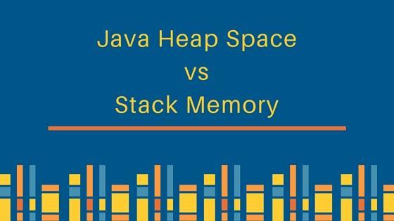
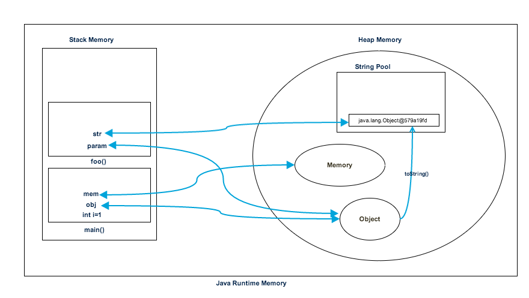

之前我写了几篇有关Java垃圾收集的文章之后，我收到了很多电子邮件，请求解释Java堆空间，Java栈内存，Java中的内存分配以及它们之间的区别。

您可能在Java，Java EE书籍和教程中看到很多有关堆和变量内存的参考，但是几乎没有就程序而言完全解释堆和栈的内存分配的。
Java运行时使用Java堆空间为对象和JRE类分配内存。每当我们创建任何对象时，它总是在堆空间中创建。
垃圾回收在堆内存上运行以释放没有任何引用的对象使用的内存。在堆空间中创建的任何对象都具有访问权限，并且可以从应用程序的任何位置进行引用。
Java Stack内存用于执行线程。它们包含短期的方法特定值，以及从该方法引用的对堆中其他对象的引用。
每当调用方法时，都会在磁盘存储中创建一个新块，以容纳该方法的本地原始值并引用该方法中的其他对象。
方法结束后，该块将立即立即变为未使用状态，用作下一个方法使用。
与堆内存分配，栈内存的大小要小一点。
让我们用一个简单的程序来了解堆和交替的内存使用情况。
package com.journaldev.test;
public class Memory {
public static void main(String[] args) { // Line 1
int i=1; // Line 2
Object obj = new Object(); // Line 3
Memory mem = new Memory(); // Line 4
mem.foo(obj); // Line 5
} // Line 9
private void foo(Object param) { // Line 6
String str = param.toString(); //// Line 7
System.out.println(str);
} // Line 8
}下图显示了与上述程序有关的堆空间和栈内存，以及如何将其用作存储原始，对象和引用变量。

让我们看一下程序的执行步骤。
根据以上解释，我们可以轻松得出以下堆空间和栈内存的区别。
java.lang.StackOverFlowError引发，而如果堆内存已满，则将引发java.lang.OutOfMemoryError: Java Heap Space错误。就Java应用程序而言，这就是Java堆空间与栈内存的全部，我希望它能在执行任何Java程序时消除您对内存分配的疑问。
“不积跬步，无以至千里”，希望未来的你能：有梦为马 随处可栖！加油，少年！
关注公众号:「Java 知己」，每天更新Java知识哦，期待你的到来！